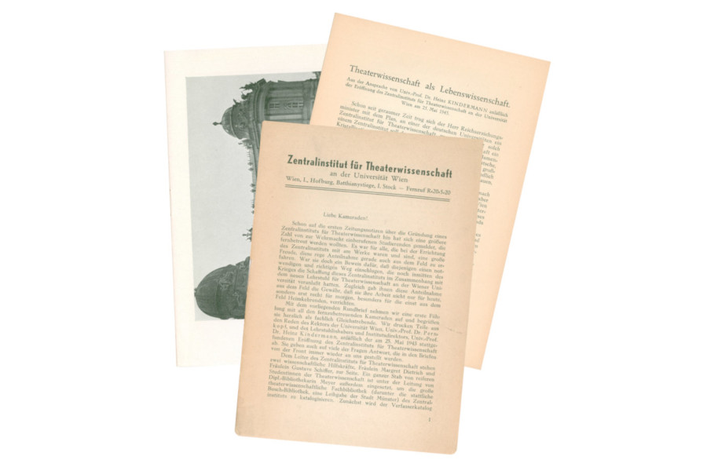

<div data-template="templates:surround" data-template-with="templates/page.html" data-template-at="content">
        <div class="container" style="color:black">
                <h1 style="text-align:center" data-template="config:app-title"/>
                <h3 style="text-align:center">Digital transcription of the "Rundbriefe des Zentralinstituts für Theaterwissenschaft"
                  and annotation for a digital edition and web application according to the TEI guidelines</h3>
                <div id="carouselExampleControls" class="carousel slide" data-ride="carousel" style="margin:20px">
                <div class="carousel-inner">
                        <div class="carousel-item active">
                                
                                <div class="carousel-caption d-none d-md-block">
                                        <h2>Example pages of the "Rundbriefe" from the Archive of the Department of Theatre, Film, and Media Studies at University of Vienna
                                        </h2>
                                </div>
                        </div>
                </div>
                <a class="carousel-control-prev" href="#carouselExampleControls" role="button" data-slide="prev">
                        <span class="carousel-control-prev-icon" aria-hidden="true"/>
                        <span class="sr-only">Previous</span>
                </a>
                <a class="carousel-control-next" href="#carouselExampleControls" role="button" data-slide="next">
                        <span class="carousel-control-next-icon" aria-hidden="true"/>
                        <span class="sr-only">Next</span>
                </a>
        </div>
                <div class="container" style="color:black">
                       
                  <p style="text-align:justify">This project was part of the course
                      <a href="https://ufind.univie.ac.at/de/course.html?lv=070163&amp;semester=2017W">"Vom Archivbestand zum digitalen Quellenkorpus. Eine praktische Einführung in Digitale Editionen"</a>
                      at <a href="https://www.univie.ac.at">University of Vienna</a> (degree programme: History), winter semester 2017,
                      in cooperation with the <a href="https://acdh.oeaw.ac.at">ACDH-OEAW - Austrian Centre for Digital Humanities at the Austrian Academy of Sciences</a>.
                      <lb/>
                                Source material and context:
                                <ul style="text-align:justify">
                                    <li>The "Rundbriefe des Zentralinstituts für Theaterwissenschaft" are a series of historical letters send to German scholars engaged in fighting in WW2,
                                        to inform them about the events at the "Zentralinstitut für Theaterwissenschaft" between 1943-1945. The institute was founded 1943 at the
                                        University of Vienna by Heinz Kindermann, under the ideological background of National Socialism, which is also reflected in these letters.
                                        Today, the letters are part of a collection which is investigated in the FWF-funded research project "Historiography – Ideology – Collection.
                                        Research-based Digitizing of Historical Theater Material from the 'Zentralinstitut für Theaterwissenschaft' in Vienna 1943–45" at the
                                        "Archiv des Instituts für Theater-, Film- und Medienwissenschaft", University of Vienna.</li>
                                </ul>
                                Content of teaching:
                                <ul style="text-align:justify">
                                    <li>The course provided a general introduction to the digital humanities as well as to digital editions. After deciding on the source material and
                                        the scope of the project, further issues have been targeted, such as conventions and standards (FAIR data principles, TEI), and tools and
                                        workflows (Git, oXygen).</li>
                                </ul>
                                Practical implementation:
                                <ul style="text-align:justify">
                                    <li>The letters were first scanned, transcribed, and converted into XML format. The textual content was then encoded according the TEI guidelines
                                        with the oXygen XML editor, and a repository for the project was created on GitHub. The letters were distributed among the participants,
                                        and project standards defined. It was agreed to create a XML file for each letter, and to annotate persons, places, organisations and works.
                                        While only tagged in the letter files, these entities where described in detail in separate lists of persons, places etc., and referenced to norm data,
                                        such as the GND of the German National Library, or GeoNames for places. A web application (based on eXist-db, GitHub; in cooperation with the ACDH, ÖAW)
                                        was then set up, giving access to all data as well as offering several tools for analyzing it.</li>
                                </ul>
                                <p style="text-align:justify">The web application also offers different indices based on the data, and tools for analysing (persons relationship network,
                                timeline, interactive location map), as well as a data-endpoint section, for downloading in various formats. Furthermore, all digitized and annotated data
                                will be part of the before mentioned research project "Historiography – Ideology – Collection", that is based on the archive collection the original letters
                                are also part of.
                                <lb/>
                                To access the digital editions just navigate via "Table of Content" - there you find the file for each letter. "Indices" offers you lists of entities in the letters,
                                via "Analyze" you find some tools to visualize information.</p>
                        </p>
                </div>
        </div>
</div>